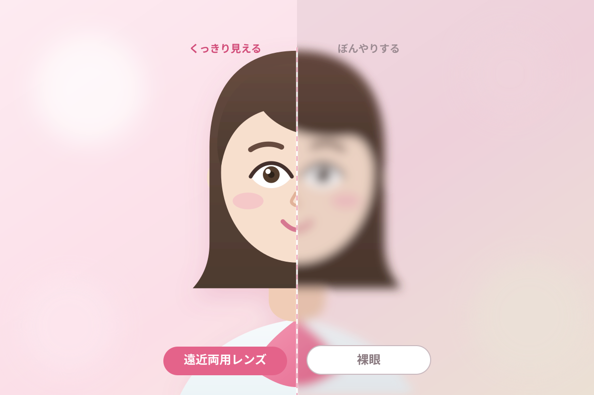

遠近になった日が、
カラコン卒業の日じゃなくていい。
近くが気になりはじめても、好きな瞳はそのままで。
見え方も、カラコンのおしゃれもあきらめない。
- こんな方に
- スマホの見すぎで、夕方になると手元がぼやける。今のカラコンは気に入っている。
- ご提案
- ごく弱い加入度数（ADD +0.75D／+1.00D）を加えた、夕方の疲れ目をリセットするサポートレンズ。今のケア習慣のまま切り替えられます。
- 製品例
- アイコフレ マルチステージ ほか
会議室のホワイトボード。
旅先で開いた地図。高速道路の標識。夕方のレシートの数字。
ほんの小さな見え間違いは、目からのサインかもしれません。
眼科提携のシティコンタクトで、まずは見え方を確かめてみませんか。
誰にも気づかれずに、世界が変わる。

年齢のせいと決めつける前に。日常のワンシーンから、目のサインを確かめてみましょう。
お出かけが増える季節は、スマホを見る時間も長くなるもの。休みのあとに残る目の重さは、ピント調節が追いつかなくなっているサインかもしれません。
遠くの標識から手元のメーターへ、視線を戻したときの一瞬の間。帰省や長距離運転の前こそ、見え方を確かめておきたいタイミングです。
お子様のコンタクトのご相談に来られた際、ご一緒に検査を受けられる方が増えています。ご家族そろってのご来店も歓迎です。
ひとつでも当てはまったら、目の状態を診てもらうタイミングです。
シティコンタクトは、眼科と連携して見え方をお調べします。
1枚のレンズの中に、遠く用・中間用・近く用の度数を配置。視線を動かすだけで、遠くも近くも自然に見えるように設計されたレンズです。
40代を過ぎるころから、目のピント調節力は少しずつ変化します。遠くがよく見えるレンズほど、 手元はぼやけて感じられるもの。だからといって手元用のメガネを重ねるのは、 見た目にも、手間にも、小さなストレスが積み重なります。
遠近両用レンズなら、1枚で遠くも近くも。
見た目はいつものコンタクトレンズとまったく同じです。
変わるのは、あなたに見えている世界だけ。


年齢とともに、涙の量は少しずつ減っていきます。乾きやすくなった目に合わないレンズを使い続けると、
見えにくさだけでなく、目のトラブルにつながることも。
だからシティコンタクトは、眼科と提携しています。

遠近両用レンズは、遠くの度数に「加入度数（ADD）」を組み合わせる繊細な処方が必要です。目の状態を診たうえで決めるから、無理のない見え方に近づけます。
涙の量が減ると、レンズの装用感も見え方も変わります。目の乾きやすさまで確認したうえで、素材やタイプをご提案します。
自己判断でのレンズ選びは、目に負担をかけることも。定期検査までセットでお受けいただけるから、長く安全にお使いいただけます。
見えるだけでなく、疲れないことまで。生活のどの距離を優先したいかをうかがい、度数のバランスを合わせていきます。
目の状態を確かめないままレンズを選ぶことに、不安はありませんか。
見え方が変わりはじめた大人の目こそ、診てもらう安心を。
※ 眼科の提携・併設状況、診療日は店舗により異なります。詳しくは各店舗ページをご確認ください。
眼科での処方だからこそ、トラブルなく安全に。
見え方をととのえながら、お顔の印象まで明るくするカラーレンズという選択です。
年齢を重ねると、瞳の輪郭はやわらぎ、白目の透明感も少しずつ変化します。 遠近両用カラコンは、ごく自然な着色で輪郭をととのえ、 顔全体の印象をやさしく引き上げてくれます。

近くが気になりはじめても、好きな瞳はそのままで。
見え方も、カラコンのおしゃれもあきらめない。
大人の目元に、ブラウンの輪郭を。
見え方も、メイク映えもあきらめない。
※ 製品名は一例です。お取り扱い・度数の設定は店舗および製品により異なります。処方は眼科の検査結果にもとづきます。
文字だけではわかりにくい「見え方の慣れ方」や「つけ外しのコツ」を、動画でご説明します。
はじめてのコンタクトレンズ
（遠近両用レンズ編）
動画は準備中です
眼科提携のシティコンタクトなら、検査からレンズ選びまで一度のご来店で。
お試しフィッティングで、遠近両用レンズの見え方を実際にご体験いただけます。
ご相談・見え方の確認は無料です。
お電話または店舗ページからご予約ください。ご予約なしでもご来店いただけます。
視力だけでなく、涙の量や角膜の状態まで確認。加入度数（ADD）を決めていきます。
実際に装用して見え方を確認。「どの距離を優先したいか」をうかがいながら合わせます。
定額制プランもご用意。装用後の調整や定期検査まで、続けてサポートします。
福岡・佐賀・長崎・大分・熊本・鹿児島・山口・鳥取
はじめての方はご利用の流れもご覧ください
コンタクトレンズは高度管理医療機器です。必ず眼科医の検査・処方を受けてお求めください。
使用前に添付文書をよく読み、正しくお使いください。定期検査は必ずお受けください。